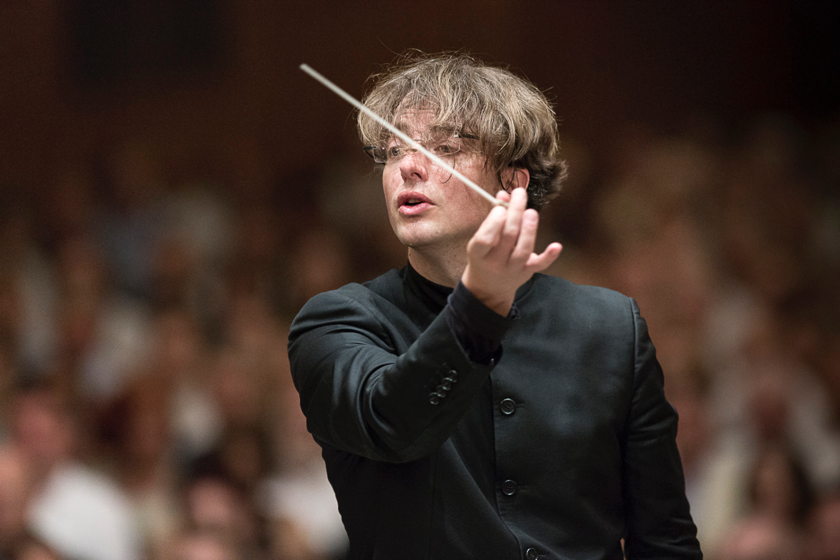

The first time that opera singer Diana Damrau came across my path, I was watching a video of her performing her signature role as the Queen of the Night in Wolgang Amadeus Mozart's Die Zauberflöte (The Magic Flute). The brilliant, light-speed, sky-high runs of melody coming forth from her mouth were unbelievable - literally. I wasn't quite sure what I was seeing and hearing - it seemed impossible to me that she could be singing like that, in perfect tune with the orchestra, at that speed and with that many pitches, and also moving around the stage acting out her role. The stunning costumery of the performance added to the mind-blowing experience, and I was compelled to seek some audio recordings out as soon as possible.
Upon research, I realized that my fascination was more than well-founded. Damrau has been winning awards for the 20 years that she's been active both on the opera and concert stages. More than one critic has called her the best coloratura soprano in the world. On this particular recording, she's accompanied by the French ensemble Le Cercle de l'Harmonie, which is known as being particularly exceptional at giving attention to the singers that they play with. Though they play many modern works in addition to such classics as Mozart, they are dedicated to using "period instruments", instruments that have been modified or no longer exist in the modern era, but were widely used at different points in history. The conductor here, Jérémie Rhorer, is one of the founders of the group, and is a master of one of the most well-known of period instruments, the harpsichord.
The sum total of masterful virtuosity here is, thankfully, used not to impress, but to preserve the beauty and feeling intended by the composer, which is the hallmark of great classical music.